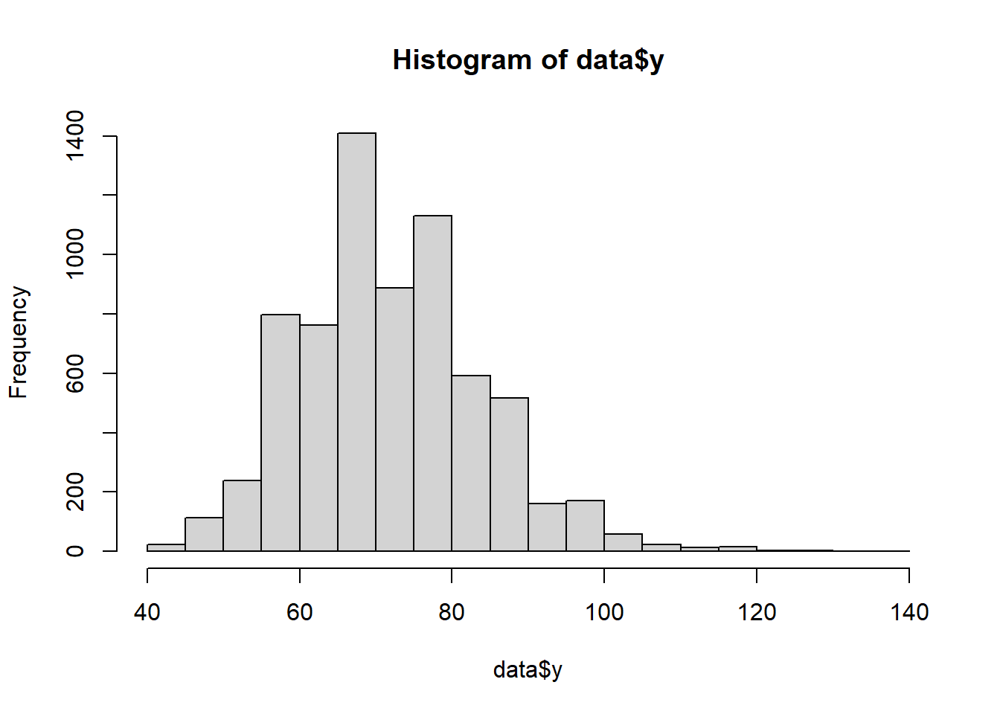
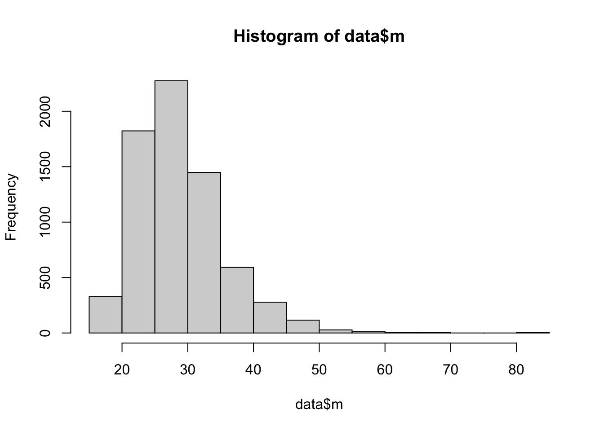

We’ll explore the relationship between physical activity and pulse in the National Health and Nutrition Examination Survey (NHANES) dataset, which has been modified for this course with simulated variables.
To try this out in practice, we load the NHANES dataset, only keep the variables we need for the example.
The variables used in the dataset:
exposure of interest (a): physical activity (continuous variable)
outcome (y): Pulse (continuous variable)
mediator (m): BMI (continuous variable)
Note that the example is created to demonstrate the methods, and there is no clinical relevance of the results. For the convenience of analysis, we have transformed the mediator (m) and outcome variable (y) so that they follow a normal distribution.
Four demographic variables are considered in the analysis: age, gender, education, and smoking. We assume that adjusting for these four confounding is sufficient to block the backdoor paths.
# load the librarylibrary(readr)# load the data nhanes <-read_csv(here::here("data/NHANES.csv"))
Rows: 10000 Columns: 76
── Column specification ────────────────────────────────────────────────────────
Delimiter: ","
chr (31): SurveyYr, Gender, AgeDecade, Race1, Race3, Education, MaritalStatu...
dbl (45): ID, Age, AgeMonths, HHIncomeMid, Poverty, HomeRooms, Weight, Lengt...
ℹ Use `spec()` to retrieve the full column specification for this data.
ℹ Specify the column types or set `show_col_types = FALSE` to quiet this message.
library(dplyr)
Vedhæfter pakke: 'dplyr'
De følgende objekter er maskerede fra 'package:stats':
filter, lag
De følgende objekter er maskerede fra 'package:base':
intersect, setdiff, setequal, union
# keep the variables used in the analyses data <- nhanes %>% dplyr::select(ID, w1 = Age, w2 = Gender, w3 = Education, w4 = Smoke100, a = PhysActive, m = BMI, y = Pulse, y2 = Diabetes ) %>%na.omit()
Continuous outcome
# Physical activity is a binary variable, dichotomized as 'Yes' or 'No'. table(data$a)
No Yes
3260 3656
# check the distribution of outcome summary(data$y)
Min. 1st Qu. Median Mean 3rd Qu. Max.
40.00 64.00 72.00 72.45 80.00 136.00
hist(data$y)

# check the distribution of mediationsummary(data$m)
Min. 1st Qu. Median Mean 3rd Qu. Max.
15.02 24.10 27.80 28.80 32.22 81.25
hist(data$m)

# check the education categories and relevel table(data$w3)
8th Grade 9 - 11th Grade College Grad High School Some College
417 858 2028 1447 2166
i) run a model for the mediator only adjusting for confouding factors.
lm_m <-lm(m ~ a + w1 + w2 + w3 + w4, data = data)summary(lm_m)
Call:
lm(formula = m ~ a + w1 + w2 + w3 + w4, data = data)
Residuals:
Min 1Q Median 3Q Max
-15.624 -4.526 -1.104 3.431 50.612
Coefficients:
Estimate Std. Error t value Pr(>|t|)
(Intercept) 28.467603 0.323923 87.884 < 2e-16 ***
aYes -1.643518 0.170461 -9.642 < 2e-16 ***
w1 0.012135 0.004819 2.518 0.011827 *
w2male 0.274867 0.160396 1.714 0.086633 .
w38th Grade 1.271955 0.365283 3.482 0.000501 ***
w39 - 11th Grade 1.084541 0.281211 3.857 0.000116 ***
w3High School 1.538987 0.234533 6.562 5.70e-11 ***
w3Some College 1.381674 0.207826 6.648 3.19e-11 ***
w4Yes -1.056643 0.163957 -6.445 1.24e-10 ***
---
Signif. codes: 0 '***' 0.001 '**' 0.01 '*' 0.05 '.' 0.1 ' ' 1
Residual standard error: 6.586 on 6907 degrees of freedom
Multiple R-squared: 0.0338, Adjusted R-squared: 0.03268
F-statistic: 30.2 on 8 and 6907 DF, p-value: < 2.2e-16
We see that physical activity (a) is associated with lower BMI.
ii) run the model for the outcome, including an interaction term between exposure and mediator.
lm_y <-lm(y ~ a + m + a:m + w1 + w2 + w3 + w4, data = data)summary(lm_y)
Call:
lm(formula = y ~ a + m + a:m + w1 + w2 + w3 + w4, data = data)
Residuals:
Min 1Q Median 3Q Max
-33.602 -8.101 -0.904 6.984 72.204
Coefficients:
Estimate Std. Error t value Pr(>|t|)
(Intercept) 75.480620 0.992520 76.050 < 2e-16 ***
aYes -5.505909 1.242754 -4.430 9.55e-06 ***
m 0.141694 0.027819 5.093 3.61e-07 ***
w1 -0.126874 0.008372 -15.155 < 2e-16 ***
w2male -3.767879 0.278790 -13.515 < 2e-16 ***
w38th Grade 0.395513 0.635041 0.623 0.533427
w39 - 11th Grade 2.069824 0.488942 4.233 2.33e-05 ***
w3High School 0.842950 0.408777 2.062 0.039233 *
w3Some College 1.327753 0.362432 3.663 0.000251 ***
w4Yes 1.531263 0.285538 5.363 8.46e-08 ***
aYes:m 0.141774 0.041893 3.384 0.000718 ***
---
Signif. codes: 0 '***' 0.001 '**' 0.01 '*' 0.05 '.' 0.1 ' ' 1
Residual standard error: 11.44 on 6905 degrees of freedom
Multiple R-squared: 0.07691, Adjusted R-squared: 0.07558
F-statistic: 57.53 on 10 and 6905 DF, p-value: < 2.2e-16
In this model we can see:
physical activity reduces pulse rate, independent of BMI (m);
BMI is positively associated with pulse rate (y);
There is interaction between physical activity (a) and BMI (m)
We will use the CMAverse R package to conduct the mediation analyses.
First, we load the package and then we setup the model object. We have to specify:
model: this is the type of model, or the approach for the causal mediation. We used the regression-based approach, so we will also do that here. However, one can also use weighting-based approach marginal structural models or the gformula.
outcome: your outcome variable
exposure: your exposure/intervention/treatment
mediator: your mediator
mreg: the type of model for the mediator. It is a list because you can have multiple mediators
yreg: type of regression for the outcome. E.g., linear, logistic, cox.
Warning in regrun(): When estimation is 'paramfunc' and yreg is 'logistic' or
'coxph', the outcome must be rare; ignore this warning if the outcome is rare
Warning in estinf(): a is not a value of the exposure; Yes is used
Warning in estinf(): astar is not a value of the exposure; No is used
Warning in estinf(): yval is not specified; 1 is used
summary(res_rb)
Causal Mediation Analysis
# Outcome regression:
Call:
glm(formula = y2 ~ a + m + a * m + w1 + w2 + w3 + w4, family = binomial(),
data = getCall(x$reg.output$yreg)$data, weights = getCall(x$reg.output$yreg)$weights)
Coefficients:
Estimate Std. Error z value Pr(>|z|)
(Intercept) -8.374413 0.346489 -24.169 < 2e-16 ***
aYes -0.634379 0.389138 -1.630 0.103
m 0.090595 0.007290 12.427 < 2e-16 ***
w1 0.057348 0.002904 19.747 < 2e-16 ***
w2male 0.377304 0.087929 4.291 1.78e-05 ***
w38th Grade 0.816055 0.161519 5.052 4.36e-07 ***
w39 - 11th Grade 0.204796 0.153228 1.337 0.181
w3High School 0.192272 0.131714 1.460 0.144
w3Some College 0.256072 0.121479 2.108 0.035 *
w4Yes 0.107626 0.087610 1.228 0.219
aYes:m 0.016244 0.012001 1.354 0.176
---
Signif. codes: 0 '***' 0.001 '**' 0.01 '*' 0.05 '.' 0.1 ' ' 1
(Dispersion parameter for binomial family taken to be 1)
Null deviance: 4611.5 on 6915 degrees of freedom
Residual deviance: 3794.1 on 6905 degrees of freedom
AIC: 3816.1
Number of Fisher Scoring iterations: 6
# Mediator regressions:
Call:
glm(formula = m ~ a + w1 + w2 + w3 + w4, family = gaussian(),
data = getCall(x$reg.output$mreg[[1L]])$data, weights = getCall(x$reg.output$mreg[[1L]])$weights)
Coefficients:
Estimate Std. Error t value Pr(>|t|)
(Intercept) 28.467603 0.323923 87.884 < 2e-16 ***
aYes -1.643518 0.170461 -9.642 < 2e-16 ***
w1 0.012135 0.004819 2.518 0.011827 *
w2male 0.274867 0.160396 1.714 0.086633 .
w38th Grade 1.271955 0.365283 3.482 0.000501 ***
w39 - 11th Grade 1.084541 0.281211 3.857 0.000116 ***
w3High School 1.538987 0.234533 6.562 5.70e-11 ***
w3Some College 1.381674 0.207826 6.648 3.19e-11 ***
w4Yes -1.056643 0.163957 -6.445 1.24e-10 ***
---
Signif. codes: 0 '***' 0.001 '**' 0.01 '*' 0.05 '.' 0.1 ' ' 1
(Dispersion parameter for gaussian family taken to be 43.3789)
Null deviance: 310099 on 6915 degrees of freedom
Residual deviance: 299618 on 6907 degrees of freedom
AIC: 45711
Number of Fisher Scoring iterations: 2
# Effect decomposition on the odds ratio scale via the regression-based approach
Closed-form parameter function estimation with
delta method standard errors, confidence intervals and p-values
Estimate Std.error 95% CIL 95% CIU P.val
Rcde 0.795897 0.096472 0.627598 1.009 0.05965 .
Rpnde 0.920467 0.090612 0.758954 1.116 0.39987
Rtnde 0.896219 0.084372 0.745213 1.078 0.24447
Rpnie 0.861660 0.016842 0.829275 0.895 2.58e-14 ***
Rtnie 0.838961 0.020430 0.799859 0.880 5.57e-13 ***
Rte 0.772236 0.073851 0.640246 0.931 0.00688 **
ERcde -0.111895 0.017613 -0.146417 -0.077 2.11e-10 ***
ERintref 0.032362 0.081066 -0.126525 0.191 0.68974
ERintmed -0.009891 0.024631 -0.058168 0.038 0.68799
ERpnie -0.138340 0.016842 -0.171349 -0.105 2.22e-16 ***
ERcde(prop) 0.491276 0.289946 -0.077008 1.060 0.09019 .
ERintref(prop) -0.142088 0.136734 -0.410081 0.126 0.29873
ERintmed(prop) 0.043428 0.118270 -0.188378 0.275 0.71347
ERpnie(prop) 0.607383 0.197668 0.219961 0.995 0.00212 **
pm 0.650811 0.289486 0.083430 1.218 0.02457 *
int -0.098659 0.134584 -0.362439 0.165 0.46352
pe 0.508724 0.289946 -0.059560 1.077 0.07934 .
---
Signif. codes: 0 '***' 0.001 '**' 0.01 '*' 0.05 '.' 0.1 ' ' 1
(Rcde: controlled direct effect odds ratio; Rpnde: pure natural direct effect odds ratio; Rtnde: total natural direct effect odds ratio; Rpnie: pure natural indirect effect odds ratio; Rtnie: total natural indirect effect odds ratio; Rte: total effect odds ratio; ERcde: excess relative risk due to controlled direct effect; ERintref: excess relative risk due to reference interaction; ERintmed: excess relative risk due to mediated interaction; ERpnie: excess relative risk due to pure natural indirect effect; ERcde(prop): proportion ERcde; ERintref(prop): proportion ERintref; ERintmed(prop): proportion ERintmed; ERpnie(prop): proportion ERpnie; pm: overall proportion mediated; int: overall proportion attributable to interaction; pe: overall proportion eliminated)
Relevant variable values:
$a
[1] "Yes"
$astar
[1] "No"
$yval
[1] "1"
$mval
$mval[[1]]
[1] 25
$basecval
$basecval[[1]]
[1] 47.17467
$basecval[[2]]
[1] 0.4939271
$basecval[[3]]
[1] 0.06029497 0.12406015 0.20922499 0.31318681
$basecval[[4]]
[1] 0.4467901
We can see that a great proportion of the effect of physical activity on diabetes risk is mediated through BMI (65%). undefinedThe remaining ~35% would represent physical activity’s direct effect on diabetes risk through other pathways